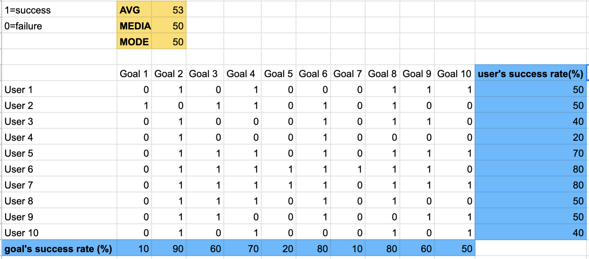

UX Design Intern
Lexmark in Lexington, KY
May - Aug 2019, 12 weeks
I worked on redesigning ServiceNow, an online resource for Lexmark employees to submit request forms for any items or services.
Between the old and new design, I saw a 36% overall increase in success rates among 10 common tasks on ServiceNow. I achieved this improvement by changing the information architecture and redesigning the request forms. Being able to support my design decisions with an understanding of employees' needs, frustrations, and existing mental models led to drastic changes.
I was interested in learning about the request forms' conversion rates, bounce rates, frequency of different requests, etc but they were not readily available.
Because there was hardly any data, I wanted to gather my own. Although specific quantitative data such as bounce rates would have been useful, I had limited time at Lexmark. With the limited time available, I decided to do user testing and collect success rates on 10 most common tasks.
Baseline user testing helped me detect potential pain points, but it also allowed me to have a standard of comparison for the new design.
01
Old Design
When requesting a security camera,"Site Operations Security Request" seems like a great option (Left Image #2, first View Details box), until you click on the form and realize it's only for location in Zhuhai, China.
New Design
Came up with a design that prioritizes location(Right Image #1) first to cut out any unnecessary searching behaviors.
02
Old Design
For an ergonomic furniture request, there is a list of options to select however, not everyone knows what each option means and options that are either/or are checkboxes which allow for multiple selections.
New Design
Make the information digestible, offer categories, use radio buttons rather than checkboxes, and offer help where needed with help icons.
03
Old Design
For the overall request selection process, the titles for each request were not clear or sometimes not representative of the request forms. For example, "Badge Reader-Security Lexington" request had more options besides a badge reader, but an employee would not know that from the current design.
New Design
Came up with a design that had helper text(right image #3) for each request form
Forms do not always have to display all the information at first load. This got me thinking about how I can incorporate interactions that were dynamic to clean up the forms. Up until this point, I was using XD to do the mockups but decided to move to Axure for prototyping because of its capabilities for including dynamic interactions.
Goal #9 had a lower success rate this time around when compared to the old design. People who failed the task stated that the wrongfully submitted form never indicated to them that they were in the wrong location. I made sure to incorporate that feedback in the last round of revisions before developer hand-off.